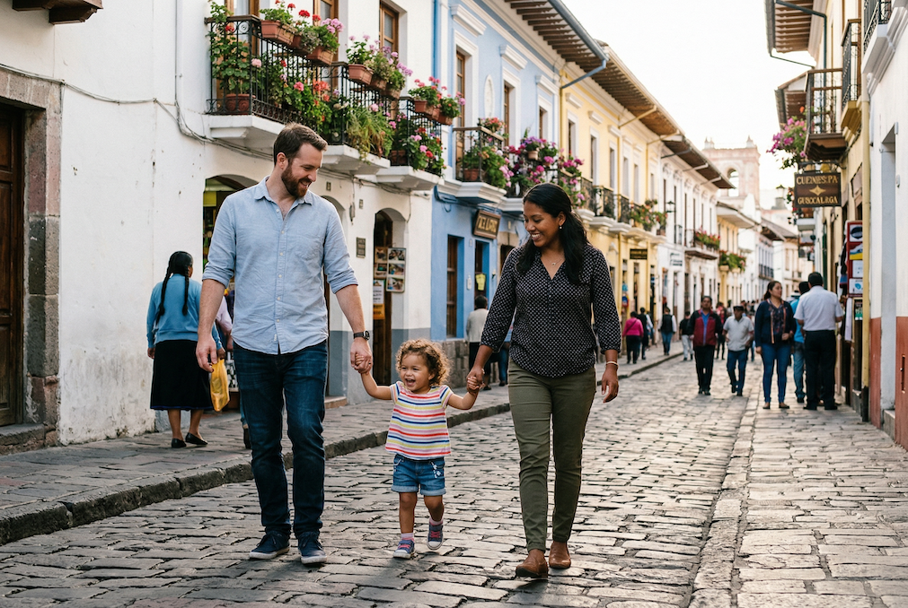
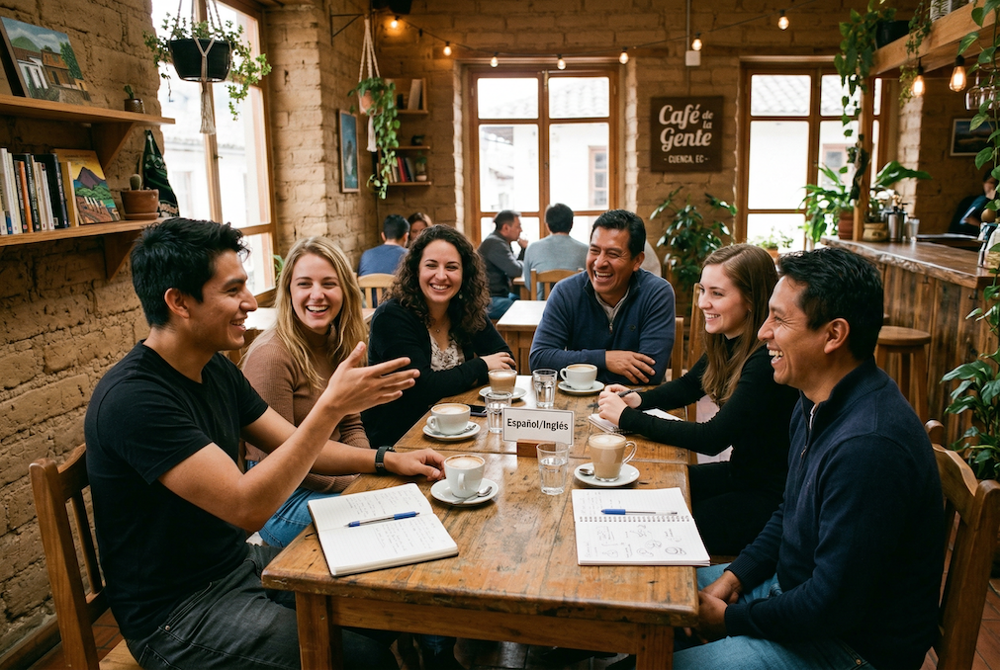
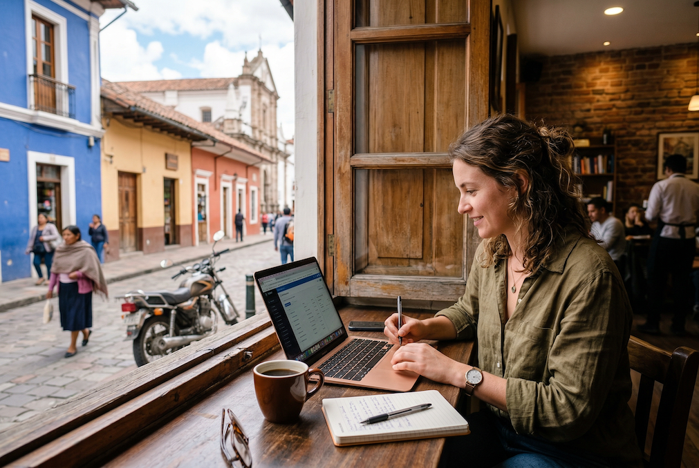

The Short Version
- Visa: Digital nomad visa covers Jon directly; Jess joins as a dependent. Jess can enter visa-free for 90 days on her Zimbabwean passport — rare in Latin America.
- Money: USD. No conversion, no math. Schwab card reimburses all ATM fees.
- Altitude: 8,400ft. Plan for a slow first week — headaches, fatigue, disrupted sleep. Manageable, not La Paz.
- Climate: "Eternal spring" — 65–72°F days, 50–55°F evenings. Layers every day. Not tropical.
- Getting around: Walking plus $2–3 taxis. No car needed in El Vergel.
- Spanish: Morlaco dialect — slower and clearer than anywhere else in Latin America. Genuinely learner-friendly.
Visa
Ecuador's digital nomad visa (Visa de Residencia Temporal) was built for exactly Jon's situation: remote workers earning income from foreign sources. It's codified in law, not a gray area, which matters.
How the Digital Nomad Visa Works for Your Family
- Jon qualifies directly as a remote worker earning USD income from a US employer (SimplaDocs).
- Jess joins as a dependent spouse — no separate income requirement.
- Bodhi joins as a dependent child.
- The visa is valid for 2 years, renewable.
- Pathway: DN visa → temporary residency → permanent residency after 21 months of continuous legal status.
- No investment capital required — this is not an investor visa.
The Zimbabwean Passport Advantage
Jess can enter Ecuador visa-free for 90 days on her Zimbabwean passport. This is genuinely rare — Mexico, Costa Rica, and Colombia all require consular visa applications for Zimbabwean passport holders, which means advance embassy visits and waiting periods. Ecuador eliminates that entirely. The family can arrive together on day one.
Once in country, Jess gets formalized as a dependent on Jon's digital nomad visa application. The Ecuadorian bureaucracy runs slower than Mexico's, but the legal framework is cleaner — the foreign income tax exemption is codified in Executive Decree 436, Article 9, not dependent on enforcement gaps.
"Ecuador is one of only a handful of countries in the Americas that allows Zimbabwean passport holders visa-free entry — 90 days, no questions asked." — Ecuador Ministry of Foreign Affairs, visa requirements by nationality
Money
Ecuador adopted the US dollar in 2000. There is no currency conversion, no exchange rate to track, no mental math at the market. Income arrives in USD. Spending happens in USD. This is a structural advantage that compounds over years — you never lose money on conversion friction.
ATMs
Cash is still king for smaller transactions. Know the fee landscape:
| Bank | ATM Fee | Notes |
|---|---|---|
| JEP Credit Union | ~$0.50 | Lowest fees in Cuenca |
| Banco Guayaquil | ~$3.51 | Widely available |
| Produbanco / Banco del Pacífico | ~$4.60 | Handles Servipagos utility payments |
The fix: A Schwab debit card reimburses all ATM fees globally. This is the standard expat move and it works. Get one before you leave.
Transfers In
Remitly is specifically recommended over Wise for transfers into Ecuador — Wise has intermediary bank fee friction on some routes. Both work; Remitly is cleaner here.
Exit Tax
Ecuador charges a 5% tax on outbound wire transfers over $1,200. This is real and affects anyone wiring money out of a local bank account. Plan your financial flows accordingly — most expats keep USD income flowing in and manage outbound transfers carefully.
Paying Bills
Servipagos (a Produbanco division) handles most utilities. Pay in person with cash plus account number, or via apps once you have a local bank account. Key services: electricity via the Centro Sur app, water via ETAPA, mobile via Movistar/Claro/CNT apps. Minimal Spanish needed — just cash, the biller name, and your account number.
Cash Note
ATMs dispense $20 bills. Change can be difficult at smaller vendors and market stalls. The Central Bank has change machines at central Cuenca locations. Carry small bills when heading to markets.
Healthcare

Cuenca has solid private healthcare infrastructure — meaningfully better than most cities at this price point. Many private clinic doctors speak at least basic English, and the larger expat community means the system has adapted to serve non-Spanish speakers.
Key Healthcare Infrastructure
- Hospital Vicente Corral Moscoso — The main public hospital. Emergency care available. Higher wait times than private.
- Multiple private clinics — English-speaking staff available at most recommended expat-facing clinics. Standard for families living here long-term.
- IESS (Ecuadorian social security) — Enrollment is possible for legal residents. Some expats use this; most families with young children use private insurance.
- Private expat health insurance — $100–200/month for the family. Multiple international plans available. Strongly recommended over relying on public system alone.
- Pediatricians — Available and recommended through the expat parents Facebook group. Check "Expat Parents in Cuenca" for current community recommendations — parents share firsthand reviews regularly.
For Bodhi
Pediatric care is available and of reasonable quality. The expat parent community is the best source for current doctor recommendations — the "Expat Parents in Cuenca" Facebook group (822 members) actively shares pediatrician reviews, and school communities (particularly CEDEI and Colegio Alemán) are reliable referral networks. Note: "Almost all doctors have their kids at Colegio Alemán" — that social network alone is a useful indicator of healthcare quality expectations in the city.
Emergency: 911. Cuenca's emergency services are functional and comparable to a mid-sized European city.
Climate
Cuenca's reputation as a city of "eternal spring" is accurate — and also slightly misleading if you're arriving from Chiang Mai or Cape Town in summer. Understand what you're getting before you pack.
What "Eternal Spring" Actually Means
- Daytime: 18–22°C (65–72°F) — genuinely pleasant, not hot
- Evenings: 10–12°C (50–55°F) — always bring a jacket
- Rain: Can happen any month — waterproof shoes are essential on cobblestones
- No seasons: No hot summer, no cold winter, no rainy season in the Southeast Asian sense
- Never tropical: You are not in a t-shirt and sandals the way you were in Chiang Mai
What to Pack
Layers every single day. A light jacket is not optional — it's daily wear. Warmer layers for evenings. Waterproof shoes are essential; cobblestones in rain are slippery. No heavy winter gear needed, but do not pack for tropical living.
For Bodhi
Warm layers always required, especially at night. Outdoor park time is year-round — the climate supports daily outdoor life consistently — but always dressed for mild cool, not heat.
One genuine advantage over Chiang Mai: no burning season. Cuenca has consistently clean air year-round. No AQI alerts, no smoky months, no reason to stay indoors. For a toddler spending hours in parks, this matters.
Altitude
Plan for a Slow First Week
Cuenca sits at 2,560m (8,400ft). The adjustment is real. Don't arrive with a packed first week.
What to Expect
Days 1–7 at altitude: headaches, fatigue, shortness of breath on stairs, and disrupted sleep. This is normal. It passes. Cuenca is manageable — this is not the 3,600m of La Paz or the 3,400m of Cusco. Most people feel fully adjusted within 5–7 days.
Hydrate Aggressively
Drink significantly more water than you think you need, especially the first three days. Avoid alcohol initially — it intensifies altitude symptoms. Take things slow. Skip demanding hikes or fitness routines the first week.
For Bodhi
Children adjust to altitude similarly to adults but can be harder to read. Monitor for:
- Unusual irritability beyond normal toddler behavior
- Loss of appetite lasting more than a day
- Labored or rapid breathing at rest
- Persistent headache (hard to identify in a toddler — watch for head-holding or unusual fussiness)
If any of these persist beyond 48 hours, see a doctor. In most cases, Bodhi will adjust within the same 3–7 day window as adults. Hydration applies equally — water, not juice.
"At 2,500 meters, Cuenca is high enough to feel it but low enough to adjust quickly. Most people are fine after three to five days. Drink water, skip the wine the first night, and don't hike Cajas on day one." — Edd & Cynthia, Two Weeks in Ecuador expat travel blog
Getting Around

Cuenca's historic center is genuinely walkable — not walkable-in-theory, but walkable in practice. From El Vergel, daily errands, markets, cafés, yoga studios, parks, and cultural venues are all accessible on foot.
| Transport | Cost | Notes |
|---|---|---|
| Walking | Free | Works for everything in El Vergel and Centro |
| City bus | $0.25 flat fare | Extensive network, functional |
| Tranvía tram | $0.25–0.30 | Connects Gringolandia/Ordóñez Lasso to Centro |
| Taxi across town | $2–3 | Standard fare for most El Vergel → Centro trips |
| Taxi to Baños thermal spa | $4–8 | Use registered taxis or ride-hailing apps at night |
No Car Needed
In El Vergel, a car is genuinely unnecessary for daily life. Parque de la Madre, CEDEI school, Supermaxi grocery, OM Healing Center, and the Tomebamba riverwalk are all walkable. IdiomArte and La Guarida in Centro are 15–20 minutes on foot or a $2–3 taxi.
Motorcycles — Possible but Different
Motorcycles are legal in Cuenca; helmets required; scooters run around $1,600 USD. The key difference from Chiang Mai: Cuenca is hilly, and cobblestone streets become genuinely slippery when wet. Riding with Bodhi requires more caution than flat-terrain cities. Most expat families settle into the walking-plus-taxi model for daily life, with bikes more for leisure riding than errands.
Spanish


Cuenca speaks Morlaco — a highland Andean dialect considered among the clearest, most learner-friendly Spanish in all of Latin America. This is a genuine structural advantage for Jess starting from scratch.
What Makes Morlaco Different
- Slower pace — noticeably slower than Mexican, coastal, or Caribbean Spanish
- Clear pronunciation — consonants don't drop, words don't blur together
- Singsong quality — a distinctive rhythm where syllables are stressed unexpectedly; sounds unusual at first, becomes easy to follow
- Quechua-origin words woven into daily speech: ñaño (bro), choclo (corn), chévere (cool), chuta (damn), biela (cold beer)
Pronouns
Usted, tú, and vos all coexist in the highlands. When uncertain, default to usted — it signals respect, not stiffness. You will not cause offense by being formal.
Learning Resources
Private tutors at $10–15/hour (via GringoPost or YapaTree) are more effective than group classes for Jess's situation — flexible scheduling around nanny hours, faster progression, tailored to actual daily vocabulary. CEDEI and Simon Bolivar Spanish School are the established options for group or intensive programs. IdiomArte offers Survival Spanish 2.0 workshops that are popular with new arrivals.
Internet & Phone
This is not a concern in Cuenca. Claro, Movistar, and CNT offer fiber in most expat neighborhoods — 50–100 Mbps standard, with higher speeds available. Fiber availability in El Vergel, Centro, and Yanuncay is solid. Starlink is available as a backup if needed.
Contrast with Oaxaca, where internet speed ranges from 0.8 to 250 Mbps depending on the specific apartment — requiring active verification before signing any lease. In Cuenca, verify before signing as a formality, but expect reliability.
SIM Cards
Claro and Movistar SIM cards are easy to obtain at any carrier store — bring your passport. Data plans are inexpensive. Pick one up within your first few days.
Power Grid Note
Ecuador experienced rolling blackouts in 2024 (up to 14 hours/day at worst) due to drought depleting the hydroelectric system. As of early 2026, the situation has improved significantly — new generation capacity online, reservoirs refilling. But the structural vulnerability remains. Practical mitigation: budget for a UPS (uninterruptible power supply), know your nearest coworking space with a backup generator (IMPAQTO, Selina), and keep a charged 4G hotspot.
Police & Safety
Cuenca was rated the safest city in South America in Numbeo's 2025 Safety Index. For a family in El Vergel day-to-day, the risk profile is comparable to a mid-sized European city.
Practical Notes
- Opportunistic crime is the primary concern — phone theft, pickpocketing near crowded markets, bag snatches at night. Normal urban precautions apply.
- Don't flash valuables. Avoid walking alone late at night in unfamiliar areas.
- Police interactions are low-frequency and low-friction. Ecuador's mordida (bribe) culture exists but is not pervasive in Cuenca. Carry all documents when driving.
- The Ecuador national homicide rate is high — but driven entirely by coastal drug trafficking in Guayaquil, Esmeraldas, and Manabí. Cuenca's Azuay province saw a 54% reduction in homicides while the national rate spiked. The city is inland, structurally isolated from coastal violence.
Key Numbers & Registration
- Emergency (police, fire, ambulance): 911
- Register with the US Embassy in Quito after arriving — standard practice for all American expats, gives you a point of contact if anything goes sideways
- Jess (Zimbabwean passport) should also register with the Zimbabwean embassy in Bogotá (nearest) for the same reason
"Walking around Cuenca, even at night in the centro, we always felt safe. It has a small-city feel — people know their neighbors and look out for each other." — TravelAwaits, "12 Reasons We've Loved Living in Cuenca, Ecuador"